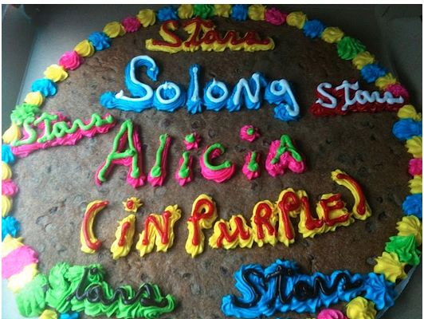
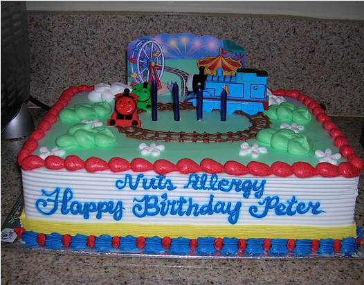
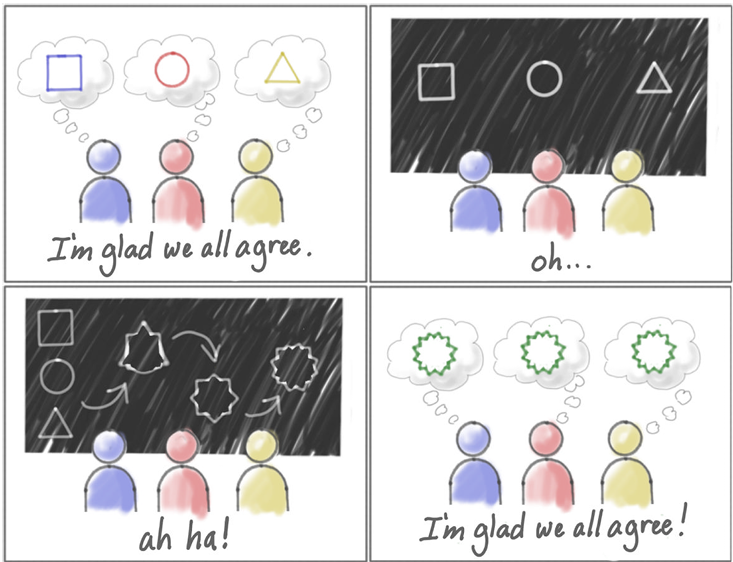
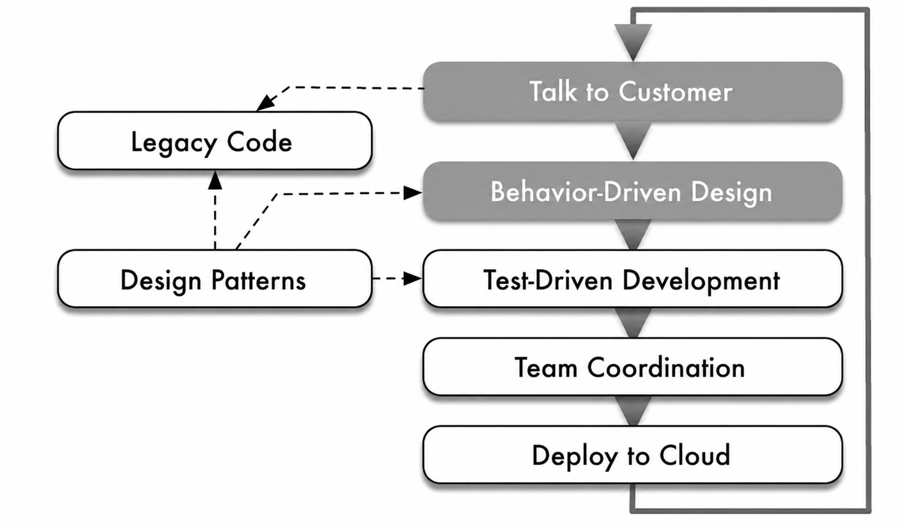
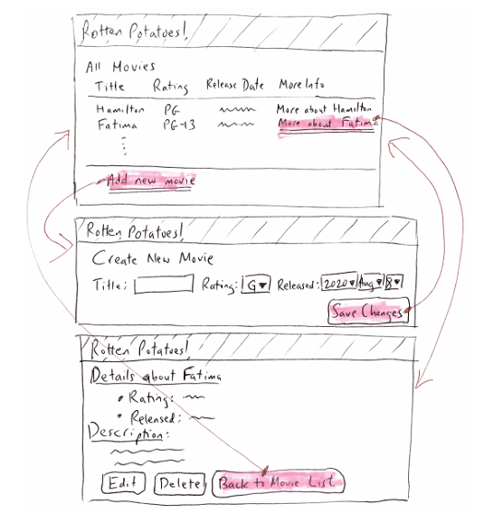

The requirements for a system are the descriptions of what the system should do—
the services that it provides and the constraints on its operation.
Software system requirements are often classified as functional requirements or non
functional requirements:
Functional requirements: These are statements of services the system should
provide, how the system should react to particular inputs, and how the system should behave in particular situations. In some cases, the functional require
ments may also explicitly state what the system should not do.
Non-functional requirements: Non-functional requirements, as the name suggests, are requirements that are not
directly concerned with the specific services delivered by the system to its users. Examples include performance, security, reliability, maintainability, and usability requirements.
2. Why understanding requirements is difficult
“
The hardest single part of building a software system is
deciding precisely what to build.
Frederick P. Brooks, Jr.
American software engineer & computer scientist
Professor, University of North Carolina, Chapel Hill
Jeff Patton in his book User Story Mapping uses a striking real-world example (borrowed from Jen Yates's Cake Wrecks) to illustrate how written requirements can be dangerously ambiguous and open to misunderstanding. A customer orders a farewell cake, asking for the text "So long, Alicia" written in purple, with stars around it. The employee writes this down and passes the note to the decorator, who interprets every word on the note with painful literalness:

Here is another example:

Sometimes stateholders might mistakenly think they have an agreement on a written document while because of miscommunication they have entirely different understandings in their heads:

In software development, this problem is even more pronounced. The requirements are often complex, technical, and abstract. They are also often incomplete, changing, and subject to interpretation. This can lead to a lot of wasted time and effort as developers build the wrong thing, or as they have to go back and forth with stakeholders to clarify the requirements.
In this and subsequent lessons we would see how BDD and other agile techniques can help address the challenges of miscommunication and misunderstanding among stakeholders.
In the next section, we will see how the rise of AI has made it even more important to have clear and precise requirements, as the rigor of software development shifts from writing code to specifying intent.
3. Why Requirements Matter Even More in the Age of AI
“
The rigor relocated from who writes the code
to what the code must satisfy.
The tests don't care whether a human or a machine produced the implementation.
They care whether it behaves correctly.
The pattern is: probabilistic inside, deterministic at the edges.
This is harder than it sounds. Specifying intent precisely enough that a machine
can generate correct implementations is not easier than writing code. It's a
different skill, and in some ways a more demanding one. You have to know
what you actually want.
You have to be able to recognize when you've gotten it.
📈 Future of Software Development Retreat February 2026 Findings
💡
In Februrary 2026, Thoughtworks hosted a workshop called “The Future of Software Development” in Deer Valley Utah. One of their key findings was that engineering quality doesn't disappear when AI writes code.
It migrates — moving from the act of writing code
into specs, tests, constraints, and risk management.
Software experts are increasingly moving their attention to the plan the software. The logic is simple: in an
AI-powered workflow, as AI can generate code based on the specification, the specification is where you have the most power to stop mistakes. Since AI scales whatever you
give it, a bad plan will result in an entire codebase full of errors
Many practitioners are adopting structured methodologies—such as EARS (Easy Approach to Requirements Syntax) and spec-driven development—to refine requirement elicitation in AI-assisted workflows.
4. Behavior-Driven Design and User Stories
For the Plan-and-Document lifecycle, requirements elicitation is done via interviewing, scenarios, and use cases; requirements
documentation is done via a Software Requirements Specification (SRS), which is a foundational document that completely describes the expected purpose, behavior, features, and constraints of a software application; requirements fulfillment is done using requirements traceability.
In contrast, for the Agile lifecycle, which follows Behavior Driven Development (BDD), functional requirements elicitation is done via user stories, UI requirement elicitation is done via Low-fidelity (Lo-fi) user interfaces and storyboards; and user stories are transformed into acceptance tests to make it sure that the requirements are met.
The figure below illustrates one iteration of the Agile lifecycle:

The Agile lifecycle involves:
Working closely and continuously with stakeholders to develop requirements and tests.
Maintaining a working prototype while deploying new features typically every two
weeks—called an iteration—and checking in with stakeholders to decide what to add
next and to validate that the current system is what they really want. Having a working
prototype and prioritizing features reduces the chances of a project being late or over
budget.
Behavior-Driven Design (BDD)
We start the Agile lifecycle with Behavior-Driven Design (BDD). BDD asks questions
about the behavior of an application before and during development so that the stakeholders
are less likely to miscommunicate.
Requirements are written down as in plan-and-document,
but unlike plan-and-document, requirements are continuously refined to ensure the resulting
software meets the stakeholders' desires.
The BDD version of requirements is user stories, which describe how the application
is expected to be used. They are lightweight versions of requirements that are better suited
to Agile. User stories help stakeholders plan and prioritize development.
Thus, like plan-and-document, you start with requirements, but in BDD user stories take the place of design
documents in plan-and-document.
Origin: 3×5 Cards from the HCI Community
User stories came from the Human Computer Interface (HCI) community. They developed
them using 3×5 cards (or A7-size cards), each with a user story of one to three sentences
written jointly by the customers and developers. The rationale is that paper cards are
nonthreatening and easy to rearrange, thereby enhancing collaborative brainstorming and prioritizing.
Note that individual developers working by themselves without customer interaction
don't need these 3-by-5 cards.
Example: The RottenPotatoes App
Suppose we want to develop a movie rating app like famous Rotten Tomatoes, named
RottenPotatoes in which we have two stakeholders:
The operators of RottenPotatoes, and
The movie fans who are end-users of RottenPotatoes.
The user story we picked is to add movies to the RottenPotatoes database and we can write
the user story in Connextra format as follows:
📄 User Story — Connextra Format (Example)
Feature:Add a movie to RottenPotatoes As amovie fan So thatI can share a movie with other movie fans I want toadd a movie to RottenPotatoes database
The general Connextra format is:
🛠 Connextra Format — General Template
Feature:[feature name] As a[Kind of stakeholder] So that[I can achieve some goal] I want to[do some task]
📚 Elaboration: User Stories and Use-Case Analysis
User stories are a lightweight approach to use-case analysis. A full use case analysis is more heavyweight and includes:
Use case name and actor(s)
Goals of the action and a summary of the use case
Preconditions — state of the world before the action
Steps — both user actions and system responses
Related use cases and postconditions — state of the world after the action
A use case diagram is a type of UML diagram that uses stick figures for actors, and can generalize, extend, or include use cases by reference. For example, a use case for "logged-in user views account summary" can include "user logs in" by reference — since logging in is a precondition.
🤖 AI in Practice: Drafting User Stories with LLMs
Modern teams now use LLMs (Claude, ChatGPT, Gemini) to draft initial user stories
from stakeholder interview transcripts. This is now standard practice at companies like
Deloitte, where product managers "use GenAI to transform business requirements into user
stories, built on context from prior stories."
💬 Sample Prompt:
"Here is a transcript of a 30-minute stakeholder interview about [product]. Generate 5 user
stories in Connextra format. For each story, also generate 3 acceptance criteria in Gherkin
(Given/When/Then). Flag any ambiguities you find in the transcript."
📊 Research Caveat (SIGCSE 2025):
A peer-reviewed study found that LLMs help students develop better acceptance
criteria, but students do better without AI when scoping the story
correctly. The lesson: use AI as a first draft generator and acceptance criteria
checker, but the human must judge whether the scope is right.
What makes a good user story versus a bad one? The SMART acronym offers
concrete and memorable guidelines:
S
Specific
M
Measurable
A
Achievable
R
Relevant
T
Timeboxed
SSpecific
A user story must clearly identify what feature is needed.
Here is an example of a vague feature paired with a specific version:
1Feature:User can search for a movie// vague2Feature:User can search for a movie by title// specific ✓
MMeasurable
Adding Measurable to Specific means that each story should be
testable, which implies that there are known expected results for some good
inputs. Here is an example of an unmeasurable feature versus its measurable counterpart:
1Feature:RottenPotatoes should have good response time// unmeasurable2Feature:When adding a movie, 99% of Add Movie pages// measurable ✓3should appear within 3 seconds
Only the second case can be
tested to see if the system fulfills the requirement.
AAchievable
Ideally, you implement the user story in one Agile
iteration. If you are getting less than one story per iteration, then they are
too big and you need to subdivide these stories into smaller ones.
RRelevant
A user story must have business value to one
or more stakeholders. To drill down to the real business value, one technique is to keep
asking "Why" — the Five Whys. Using a ticket-selling app
for a regional theater as an example, suppose the proposal is to add a Facebook linking
feature, here are the “Five Whys” in action with their recursive
questions and answers:
❓ The Five Whys
Why add the Facebook feature? — As box office manager, I think
more people will go with friends and enjoy the show more.
Why does it matter if they enjoy the show more? — I think we will
sell more tickets.
Why do you want to sell more tickets? — Because then the theater
makes more money.
Why does the theater want to make more money? — We want to make
more money so that we don't go out of business.
Why does it matter that the theater is in business next year? —
If not, I have no job.
We're pretty sure the business value is now apparent to at least one stakeholder!
TTimeboxed
Timeboxing means that you stop developing a story
once you've exceeded the time budget. Either you give up, divide the user story
into smaller ones, or reschedule what is left according to a new estimate. If dividing
looks like it won't help, then you go back to the customers to find the highest value
part of the story that you can do quickly.
The reason for a time budget per user story is that without careful accounting of each iteration, the whole project
could be late, and thus fail. Learning to budget a software project is a critical skill,
and exceeding a story budget and then refactoring it is one way to acquire that skill.
🎯 Minimum Viable Product (MVP)
One important concept expands upon the R of SMART.
The minimum viable product (MVP) is a subset of the full set of features
that when completed has business value in the real world. Not only are the stories Relevant,
but the combination of all of them makes the software product viable in the
marketplace. Obviously, you can't start selling the product if it's not viable,
so it makes sense to give priority to the stories that will let the product be shipped.
🤖 AI in Practice: Using AI as a SMART Validator
The software engineer's role transitions from drafting to
evaluating AI-generated stories against the SMART criteria to prevent
hallucinated or unmeasurable requirements.
💬 Sample Prompt:
"Evaluate the following user story against the SMART criteria (Specific, Measurable,
Achievable, Relevant, Timeboxed). For each criterion, say whether it passes or fails
and explain why. Then suggest an improved version."
✍️ Classroom Exercise:
Deliberately write a bad user story
Paste it into Claude or ChatGPT with the prompt above
Revise the story based on the AI's critique
Compare the AI's critique to the SMART rubric —
does it catch the same problems?
6. Lo-Fi UI Sketches and Storyboards
When adding a new feature, we almost always need to specify a UI. The problem:
building software prototypes intimidates stakeholders from suggesting improvements —
the exact opposite of what we need at this early stage.
✏️ Lo-Fi (Low-Fidelity) UI Sketches
The HCI community's solution: use kindergarten tools — paper,
pencil, crayons, scissors. Just as they advocate 3×5 cards for user stories, they
recommend paper prototypes for UI mockups. These lo-fi sketches are:
Non-threatening — no one hesitates to cross out a pencil sketch
Easy to discard — minutes of work, not hours of CSS
Inclusive — no technical skill needed to participate
Ideally, make sketches for every user story
that involves a UI. You will have to specify all these details in HTML eventually — it is
far easier to get them right in pencil first.
🎥 Storyboards
A lo-fi sketch shows the UI at one instant. A storyboard
shows how screens flow as users interact — like a comic strip of the user journey.
Borrowed from filmmaking, a UI storyboard is typically a tree or graph of
screens driven by different user choices. It must capture:
Pages or sections of pages
Forms and buttons
Popups
The figure below shows a storyboard of lo-fi sketches for the RottenPotatoes app.
The pink-highlighted words are
clickable links or buttons; the arrows show which screen appears next:

Figure: A storyboard illustrating two user stories about RottenPotatoes.
Top: home page. Middle: add new movie. Bottom: movie details page.
📃 From Sketch to HTML
Split the sketch into layout blocks — use
<div> elements for obvious sections
Implement structure first, style later
Use a CSS framework like Bootstrap to get an acceptable
prototype quickly
Add custom CSS only after everything works
7. Story Points and Velocity
Some stories take 1 hour; others take 2 weeks. Simply counting 'stories completed per iteration' is misleading. The solution is to assign each story an integer number of
story points reflecting its perceived difficulty and uncertainty.
Velocity is the moving average of the number of story points completed per iteration. It is a more accurate measure of team productivity and helps with forecasting how many iterations are needed to complete the backlog.
Backlog is the collection of stories that have been prioritized and point-estimated but not yet started in this iteration.
8. From User Stories to Acceptance Tests: pytest-bdd
✅ What is an Acceptance Test?
An acceptance test in BDD is an executable
specification that defines how a software feature should behave from the
user's perspective.
Acceptance tests are written by a collaboration of
stakeholders and programmers to define when a requirement is done.
Written in plain language, they bridge the communication gap between business
stakeholders, developers, and QA to ensure the team builds the right business value.
Gherkin Syntax — Given / When / Then
In BDD, acceptance tests are structured using the
Given-When-Then format, known as Gherkin syntax:
Keyword
Role
Example
Given
The initial context or state of the system
Given the movie database is empty
When
The specific action or event the user performs
When I add a movie named "Hamilton"
Then
The expected outcome or resulting behavior
Then the movie list should contain "Hamilton"
And / But
Chains multiple conditions under any primary step
And the movie count should be 1
Every Gherkin document is saved
in a .feature file and must contain a single feature with one or more
scenarios written in Given-When-Then structure.
Example: RottenPotatoes Feature File
📄 features/add_movie.featureGherkin
Feature:Add a movie to RottenPotatoesAs amovie fanSo thatI can share a movie with other movie fansI want toadd a movie to RottenPotatoes databaseScenario:Add Hamilton movieGiventhe movie database is emptyWhenI add a movie named "Hamilton"Thenthe movie list should contain "Hamilton"
💡 From Text to Executable Test
At this point, the scenario is still only text. To execute it,
we need a tool that can connect the English sentences to Python functions.
We will use pytest-bdd.
Step-by-Step: pytest-bdd Walkthrough
0Install pytest-bdd
pip installpytest pytest-bdd
1Save the Gherkin document as a
.feature file
Save the feature file inside a folder named
features:
── features/ └── add_movie.feature
2Create the implementation file
File: movies.py
movies=[]defadd_movie(title):pass
⚠️ Intentional Failure
This function intentionally does nothing.
We expect the test to fail. This is the
red step of the Red-Green-Refactor cycle.
3Create step definitions
File: tests/test_movies.py
frompytest_bddimportscenarios, given, when, thenfrommoviesimportmovies, add_moviescenarios("../features/add_movie.feature")@given("the movie database is empty")defclear_database():movies.clear()@when('I add a movie named "Hamilton"')defadd_hamilton():add_movie("Hamilton")@then('the movie list should contain "Hamilton"')defverify_movie():assert"Hamilton"inmovies
🔁 Gherkin ↔ Python — Automatic Connection
Gherkin sentence
Python decorator
Given the movie database is empty
@given("the movie database is empty")
When I add a movie named "Hamilton"
@when('I add a movie named "Hamilton"')
Then the movie list should contain "Hamilton"
@then('the movie list should contain "Hamilton"')
pytest-BDD automatically connects each Gherkin sentence
to its matching Python function.
4Run the test — expect it to
FAIL
python-m pytest -v
Expected output:
FAILEDassert 'Hamilton' in []
❌ Why did it fail?
Because add_movie() contains only
pass — the movie was never actually added to the list.
5Fix the implementation — watch it
PASS
Modify movies.py:
movies=[]defadd_movie(title):movies.append(title)
Now run again:
python-m pytest -v
Expected output:
PASSED
✔️ Requirement Satisfied
The requirement has now been satisfied. The Gherkin scenario
that the stakeholder can read is also the test that the machine
executes — this is the core idea of BDD.
9. Pros and Cons of BDD
Advantages of BDD
The advantage of user stories and BDD is creating a common language shared
by all stakeholders, especially the nontechnical customers. BDD is perfect for
projects where the requirements are poorly understood or rapidly changing,
which is often the case. User stories also make it easy to break projects into small
increments or iterations, which makes it easier to estimate how much work remains.
The use of 3×5 cards and paper mockups keeps nontechnical customers involved in the
design and prioritization of features, which increases the chances of the software meeting
the customer's needs. Iterations drive the refinement of this process. Moreover, BDD
naturally leads to writing tests before coding, shifting the validation
and development effort from debugging to testing.
🎯 BDD Plays Many Important Roles in the Agile Process
Comparing user stories, pytest-bdd, points, and velocity
to plan-and-document processes makes it clear that BDD covers:
Requirements elicitation
Requirements documentation
Acceptance tests
Traceability between features and implementation
Scheduling and monitoring of project progress
Disadvantages of BDD
⚠️ Limitations to Be Aware Of
It may be difficult or too expensive to maintain continuous
customer contact throughout development — some customers may not want to
participate.
BDD may not scale to very large software projects or to
safety-critical applications. Plan-and-document is often a better match in
both situations.
A project could satisfy customers but produce a poor software
architecture, which is an important foundation for maintaining the
code. Recognizing design patterns and refactoring when necessary reduces
this risk.
💡 Final Word
BDD may not initially seem like the natural way to develop
software — the strong temptation is to just start hacking code. However, once
you have learned BDD and had success at it, for most developers there
is no going back.
1Define Behavior-Driven Design (BDD) and explain how it differs from the Plan-and-Document approach to requirements.📝 Descriptive
▶ Show Sample Answer
BDD (Behavior-Driven Design) asks questions about the behavior of an application before and during development so that stakeholders are less likely to miscommunicate. Unlike Plan-and-Document, requirements in BDD are continuously refined rather than fixed upfront.
Dimension
Plan-and-Document
BDD / Agile
Requirements elicitation
Interviewing, scenarios, use cases
User stories
Requirements documentation
Software Requirements Specification (SRS)
User stories + acceptance tests
Requirements fulfillment
Requirements traceability
Executable acceptance tests
Refinement
Fixed at start
Continuously refined
2Write a user story in the Connextra format for the following scenario: A student wants to view their assignment grades on an online university portal.💻 Applied
▶ Show Sample Answer
The Connextra format is: Feature name / As a [stakeholder] / So that [goal] / I want to [task]
Feature: View assignment grades
As a student
So that I can track my academic progress
I want to view my grades for all submitted assignments on the university portal
All three clauses (As a, So that, I want to) must be present. The stakeholder is identified, the business goal is clear, and the task is specific.
3Explain the SMART acronym for user stories. For each letter, give a brief description and state whether the following user story violates it: “The app should be fast.”💡 Conceptual
▶ Show Sample Answer
Letter
Meaning
Does “app should be fast” violate it?
S — Specific
Clearly identifies what feature is needed
❌ Yes — “fast” is not specific
M — Measurable
Testable with known expected results
❌ Yes — cannot be tested without a number
A — Achievable
Implementable in one iteration
❌ Yes — undefined scope, impossible to size
R — Relevant
Has business value to a stakeholder
✅ Maybe — depends on context
T — Timeboxed
Can be stopped at the time budget
❌ Yes — no defined boundary to stop at
Better version: “When adding a movie, 99% of Add Movie pages should appear within 3 seconds.”
4Describe the “Five Whys” technique. Using the lecture's theater example, explain what business value was ultimately uncovered.📝 Descriptive
▶ Show Sample Answer
The Five Whys is a technique to drill down to the real business value of a user story by recursively asking “Why?” until the root business motivation is found.
Using the theater Facebook feature example from the lecture:
Why add Facebook? → More people will go with friends and enjoy the show more.
Why does enjoyment matter? → We will sell more tickets.
Why sell more tickets? → The theater makes more money.
Why make more money? → To not go out of business.
Why stay in business? → I have a job.
The true business value is job security and organizational survival — far more fundamental than a Facebook feature. This technique prevents building features that don't serve real needs.
5What is a Minimum Viable Product (MVP)? How does it relate to the R (Relevant) criterion in SMART?💡 Conceptual
▶ Show Sample Answer
The Minimum Viable Product (MVP) is a subset of the full set of features that, when completed together, creates a product with real business value in the marketplace. It is not a single feature but the combination of features that makes the product viable enough to ship and sell.
Its connection to R (Relevant): the MVP concept expands upon Relevance. Individual stories must each have business value (Relevant), but collectively the stories that form the MVP must make the product viable in the real world. You cannot start selling a product that is only partially built, so MVP stories should be prioritized first in the backlog to enable shipping.
6What are Lo-Fi UI sketches? Why does the lecture recommend using paper and pencil rather than digital tools for early UI prototyping? List three specific advantages mentioned.📝 Descriptive
▶ Show Sample Answer
Lo-Fi (Low-Fidelity) UI sketches are rough, paper-based mockups of user interfaces, created using kindergarten tools such as paper, pencil, crayons, and scissors. They represent the UI equivalent of 3×5 user story cards.
Three advantages from the lecture:
Non-threatening: No one hesitates to cross out or modify a pencil sketch, encouraging honest feedback from non-technical stakeholders.
Easy to discard: Takes minutes to create and discard, not hours of CSS code, making it cheap to experiment.
Inclusive: No technical skill is needed to participate, so all stakeholders can be actively involved in the design process.
7Explain the difference between a lo-fi sketch and a storyboard. Why is a storyboard necessary in addition to individual sketches?💡 Conceptual
▶ Show Sample Answer
A lo-fi sketch shows what the UI looks like at one instant in time — a static snapshot of a single screen.
A storyboard shows how multiple screens flow together as a user interacts with the application over time — like a comic strip of the user journey. It is typically a tree or graph of screens driven by different user choices, and must capture pages, forms, buttons, and popups.
A storyboard is necessary because web applications are inherently dynamic — clicking a button leads to a different screen, submitting a form changes state. Without a storyboard, the team and stakeholders can agree on individual screens but miss disagreements about how the screens connect. The lecture notes that you must agree on not only the content of Lo-Fi sketches but on what happens when users interact with each page.
8Define story points and velocity. A team completed 12, 15, 10, and 13 story points over four iterations. What is their velocity? If they have 80 story points remaining in their backlog, how many more iterations do they need?💻 Calculation
▶ Show Sample Answer
Story points are integer values assigned to each user story reflecting perceived difficulty and uncertainty. Velocity is the moving average of story points completed per iteration — a measure of team productivity used for forecasting.
The backlog is the collection of stories that have been prioritized and point-estimated but not yet started. Velocity allows the team to forecast completion without fixing a deadline.
9What is an acceptance test in BDD? How does it differ from a unit test? Why is it important that acceptance tests are written collaboratively by stakeholders and programmers?💡 Conceptual
▶ Show Sample Answer
An acceptance test in BDD is an executable specification that defines how a software feature should behave from the user's perspective. It is written in plain language (Gherkin Given/When/Then) and bridges the gap between business stakeholders, developers, and QA.
Key difference from unit tests: a unit test checks a single method or function from a technical/developer perspective. An acceptance test checks an entire user-visible feature from the stakeholder's perspective, using natural language that non-technical people can read and validate.
Collaborative authorship is important because it ensures that both sides agree on what “done” means. Stakeholders confirm that the test reflects their real intent; programmers confirm it is technically testable. A test written by only one side risks missing the other's perspective — building something technically correct but not what was wanted, or wanting something that cannot be implemented as described.
10Explain the Given/When/Then (Gherkin) syntax. What does each keyword represent? Why is every Gherkin document saved as a .feature file?📝 Descriptive
▶ Show Sample Answer
Gherkin is a structured plain-language format used in BDD acceptance tests. Each keyword has a distinct role:
Keyword
Role
Example
Given
Initial context or state of the system
Given the movie database is empty
When
The specific action the user performs
When I add a movie named “Hamilton”
Then
The expected outcome or behavior
Then the movie list should contain “Hamilton”
And / But
Chains multiple conditions under any primary step
And the movie count should be 1
Gherkin documents are saved as .feature files because each file must contain a single feature with one or more scenarios. The .feature extension signals to tools like pytest-bdd that the file should be parsed as Gherkin and connected to Python step definitions.
11Write a complete Gherkin .feature file for the following scenario: A university student logs into the student portal. If login succeeds, they should be redirected to the dashboard. If login fails (wrong password), they should see an error message.💻 Coding
▶ Show Sample Answer
Feature:Student portal login As auniversity student So thatI can access my academic information I want tolog into the student portal securely
Scenario:Successful login GivenI am on the student portal login page WhenI enter a valid student ID and correct password AndI click the Login button ThenI should be redirected to the student dashboard
Scenario:Failed login with wrong password GivenI am on the student portal login page WhenI enter a valid student ID and an incorrect password AndI click the Login button ThenI should see the error message "Invalid credentials. Please try again."
The feature covers both the happy path (success) and the sad path (failure) — both are required for a complete feature as noted in the lecture.
12The following pytest-bdd step definition is missing its implementation body. Complete it so that it correctly clears the movies list and adds the given movie. Explain each line you write.💻 Coding
frompytest_bddimport given, when, then frommoviesimport movies, add_movie
@given("the movie database is empty") defclear_database(): # ??? complete this
@when('I add a movie named "Hamilton"') defadd_hamilton(): # ??? complete this
▶ Show Sample Answer
@given("the movie database is empty") defclear_database(): movies.clear() # removes all items from the movies list
@when('I add a movie named "Hamilton"') defadd_hamilton(): add_movie("Hamilton") # calls the add_movie function with the title
Explanation:movies.clear() empties the list so each test starts from a known empty state (making the test Independent and Repeatable). add_movie("Hamilton") invokes the function under test. pytest-bdd automatically matches each @given/@when/@then decorator string to the corresponding Gherkin line in the .feature file.
13Chad Fowler states: “The pattern is: probabilistic inside, deterministic at the edges.” In the context of AI-assisted software development, explain what this means and how BDD acceptance tests serve as the “deterministic edges.”📊 Analytical
▶ Show Sample Answer
Fowler's quote from the lecture, from his essay “Relocating Rigor,” means:
Probabilistic inside: The AI model that generates code is a probabilistic system — it does not guarantee correct output. Given the same prompt, it may produce different code on different runs, and any given output may contain errors.
Deterministic at the edges: The tests that validate whether the code is correct must be deterministic — they must pass or fail with a clear binary result, regardless of how the code inside was produced.
BDD acceptance tests serve as the “deterministic edges” because a Gherkin scenario has a fixed, agreed-upon outcome: Given a certain state, When a user performs an action, Then a specific, measurable thing must happen. The test does not care whether a human or an AI produced the implementation — it only cares whether the behavior is correct. This is why the lecture emphasizes that BDD's role has increased in importance, not decreased, in the AI era.
14The lecture describes the Thoughtworks February 2026 retreat finding that “engineering quality migrates” when AI writes code. Analyse what this means: where does quality migrate from, where does it migrate to, and what implications does this have for how software engineers should spend their time?📊 Analytical
▶ Show Sample Answer
According to the Thoughtworks 2026 retreat findings cited in the lecture:
Migration from: The act of writing code itself. Traditionally, quality was ensured through careful coding by skilled developers. When AI generates the code, this locus of control is lost.
Migration to: Four new areas — Specs (precise requirements), Tests (executable acceptance and unit tests), Constraints (boundaries and rules the AI must follow), and Risk management (identifying what can go wrong).
Implications for time allocation:
Engineers should invest more time in writing clear, precise specifications before prompting AI — because a bad plan scales into a codebase full of errors.
Writing comprehensive acceptance tests (BDD scenarios) becomes more critical, as they are the only deterministic check on probabilistic AI output.
Time previously spent on typing syntax should shift to reviewing AI output, validating correctness, and understanding the system architecture — skills that AI currently lacks.
15A product manager gives you the following user story: “As a user, I want the app to be better.” (a) Identify which SMART criteria this violates and why. (b) Apply the Five Whys to uncover a plausible real business need. (c) Rewrite it as one SMART user story in Connextra format with one Gherkin acceptance test scenario.📊 Analytical + 💻 Coding
▶ Show Sample Answer
(a) SMART violations:
S — Not Specific: “Better” is undefined.
M — Not Measurable: There is no numeric or testable criterion for “better.”
A — Not Achievable: Cannot be scoped to one iteration with no definition.
T — Not Timeboxed: No clear boundary at which to stop.
(b) Five Whys (example):
Why “better”? → Users are complaining it's slow.
Why does slowness matter? → Users abandon the app mid-task.
Why is abandonment a problem? → We lose conversions and revenue.
Why do we need revenue? → To stay in business.
Why stay in business? → To serve our users and keep our jobs.
(c) SMART Connextra user story + Gherkin scenario:
Feature:Fast search results As aregistered user So thatI don't abandon the app due to slow loading I want toreceive search results within 2 seconds
Scenario:Search results load within 2 seconds GivenI am logged in and on the search page WhenI enter a search term and press Enter Thensearch results should appear within 2 seconds Andat least one result should be displayed